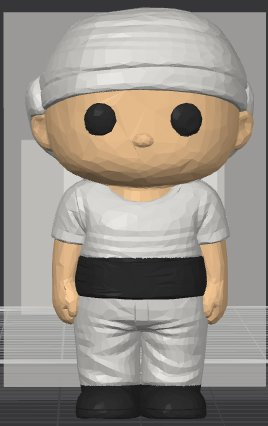
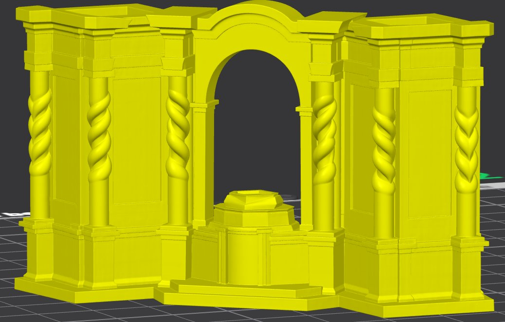
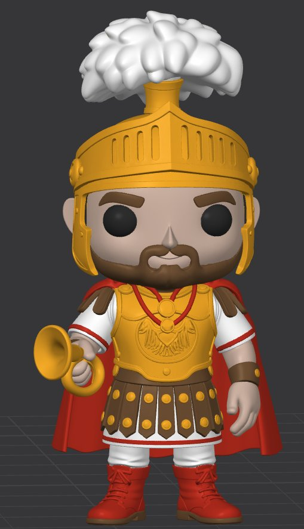
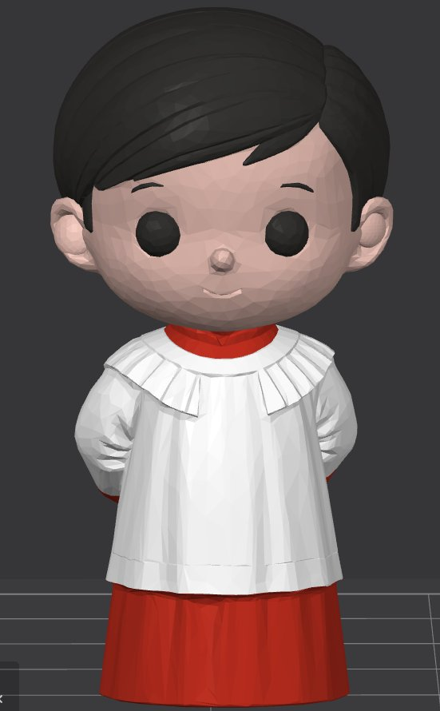

I
Hablamos
Me cuentas tu hermandad, los colores exactos (túnica, capirote, cíngulo, escudo) y cuántas piezas necesitas. Te paso presupuesto cerrado.
— XXIV horæ
«Manu fabricata, animo cofradiæ» — figuras impresas en 3D y acabadas a mano, una por una.
Nazarenos, costaleros, músicos, monaguillos, altares de cultos y centurias. El color exacto de tu hermandad — túnica, capirote, cíngulo, escudo. Para hermandades, cofradías y particulares de toda España.
Pulsa cualquier figura para personalizar colores, ver precios y hacer tu pedido. Cada pieza, impresa y revisada a mano en Granada.
El recuerdo cofrade por excelencia. Replicamos exactamente el color de la túnica, capirote, cíngulo y escudo de tu hermandad. Ideal como detalle, regalo o como obsequio en cultos y traslados.

Individual o en packs de 5 y 10. Perfecto para componer cuadrillas completas.
Cornetas, tambores y bombos. Individual o en packs de 5 y 10 piezas.

Tres tamaños disponibles. Pieza decorativa con presencia, ideal para vitrinas y regalos institucionales.

Pieza articulada por componentes — la montas tú. Casco, escudo, lanza y túnica con detalle.

Individual o en packs de 5 y 10. Pieza con muchísimo carácter para acompañar al cortejo.
De tu cofradía a tu vitrina en cuatro pasos. Sin sorpresas. Tú me dices, yo lo imprimo.
Me cuentas tu hermandad, los colores exactos (túnica, capirote, cíngulo, escudo) y cuántas piezas necesitas. Te paso presupuesto cerrado.
Te envío una vista previa o muestra para validar el color antes de imprimir el lote completo. Si no encaja, ajustamos.
Cada figura se imprime en 3D, se lija, se pinta a mano y se revisa. Si una pieza no me convence, no sale.
Embalado seguro, con seguimiento. Llega a casa de cada hermano o directamente a la sede de la hermandad.
Llevo años combinando dos cosas que me apasionan: la impresión 3D y la Semana Santa. De esa mezcla sale este pequeño taller en Granada, donde diseño y produzco figuras cofrades para hermandades, cofradías y particulares de toda España.
Cada pieza se imprime y revisa una a una. Puedo replicar el color exacto de tu cofradía, y si necesitas un tamaño o una figura especial fuera de catálogo — me lo dices y te preparo presupuesto sin compromiso.
Tamaños fuera de catálogo, figuras exclusivas, encargos para cofradías enteras o regalos institucionales. Cuéntame qué tienes en mente y te preparo presupuesto sin compromiso.
¿No ves tu duda? Pregúntame por WhatsApp y te respondo en horas.